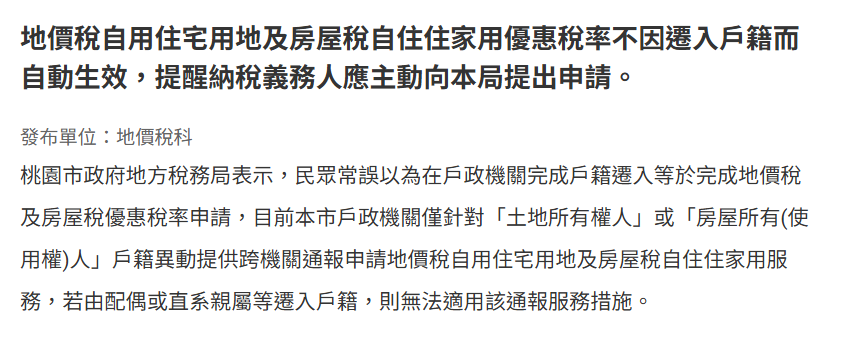
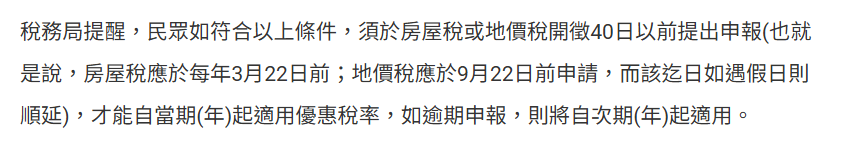
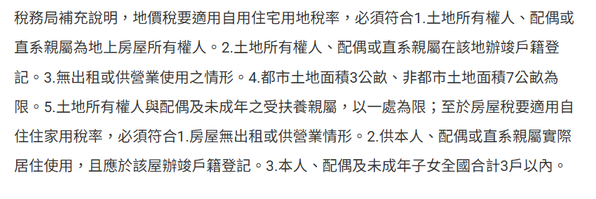
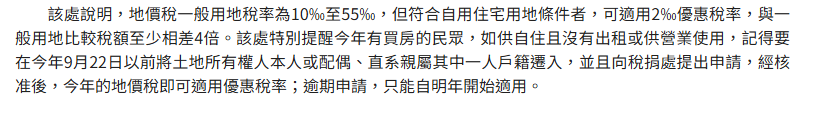
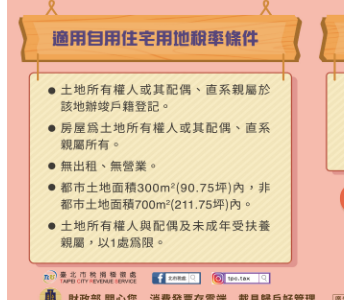
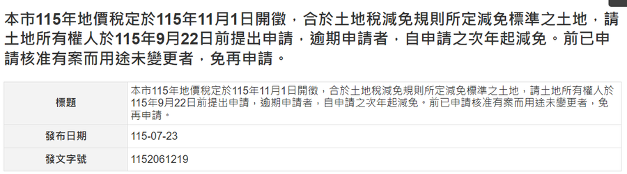
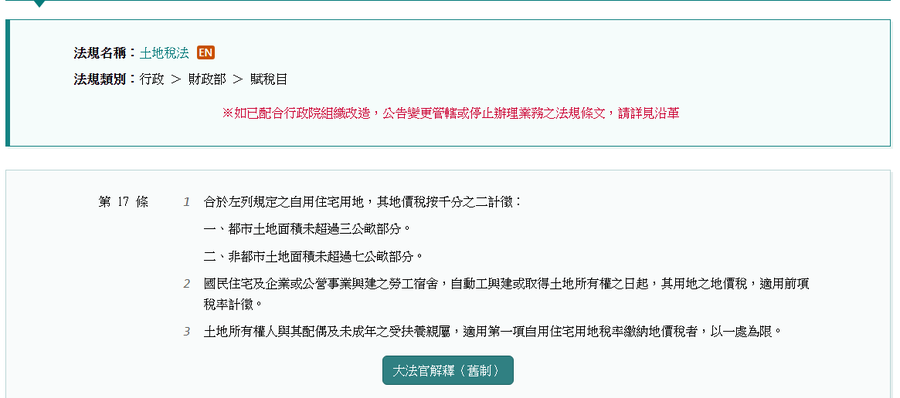

戶政那邊辦完，稅捐這邊不會自己動
搬進去、把戶口遷過來、東西都放好了，多數人心裡就把這件事結案了。問題是，戶籍登記是內政系統，課稅是稅捐系統，這兩件事中間沒有一條線自動接起來。
「民眾常誤以為在戶政機關完成戶籍遷入等於完成地價稅及房屋稅優惠稅率申請」 桃園市政府地方稅務局・上版日期 114-12-15
而且還有更細的一層。同一則公告寫得很清楚：跨機關通報只針對「土地所有權人」或「房屋所有（使用權）人」本人的戶籍異動，若由配偶或直系親屬等遷入戶籍，則無法適用該通報服務措施。
換句話說，很多人以為「反正戶政會幫我通報過去」，但通報的前提是遷戶籍的那個人剛好就是所有權人。太太遷、爸媽遷、孩子遷，都不算。
這件事沒有人會來通知你。稅單照樣寄，金額照樣繳，繳款書上不會有一行字寫「你其實可以用比較低的稅率」。要自己回頭去看，才看得到。
三個講反了的說法
這三句話在生活裡出現的頻率最高，也最容易讓人整年錯過期限。
我戶籍早就遷進去了，稅自然就是自用的。
戶籍登記只是條件之一。優惠稅率要土地所有權人主動提出申請，稅捐機關才會核定。
依據：土地稅法第 9 條（自用住宅用地定義）、第 41 條（應於開徵四十日前提出申請）
房屋稅去年改成自住了，地價稅應該也一起改。
兩個稅、兩張表、兩個期限。房屋稅要在每年 3 月 22 日前、地價稅要在 9 月 22 日前，各自提出申報。過了一個，不等於過了另一個。
依據：桃園市政府地方稅務局公告（上版日期 114-12-15）
今年來不及沒關係，明年再一起補回來。
補不回來。逾期申請者，自申請之次年開始適用。今年這一整年照一般用地課出去的，就是課出去了。
依據：土地稅法第 41 條、新北市政府稅捐稽徵處 115-07-23 公告
四個要記住的數字
每一個都附法源與出處，你可以自己點進去對。
一般用地是千分之十起跳，累進到千分之五十五。同一塊地，兩種身分，繳出來的錢不是同一個量級。
土地稅法第 16 條、第 17 條法條寫的是「地價稅開徵四十日前」。地價稅每年 11 月 1 日開徵，往前推四十日，就是 9 月 22 日。該日如遇假日則順延。
土地稅法第 41 條逾期申請者，自申請之次年開始適用。不是罰你，是這一年就用一般稅率算完，不會回頭追溯。
土地稅法第 41 條土地所有權人與其配偶及未成年之受扶養親屬，適用自用住宅用地稅率者，以一處為限。面積上限是都市土地 3 公畝、非都市土地 7 公畝。
土地稅法第 17 條官方公告怎麼寫的
下面每一張都是官方網站的實際畫面，紅框標的就是你要看的那一格。出處與擷取日期都寫在圖下面，你可以自己開來對一次。

1 2 3
1 2 3
1 2 3
1 2 3
1 2
1 2 3
1 2看到這幾件事要動
下面每一條都不是危言聳聽，是真的會讓你多繳、或是讓你被追補的情況。
跨機關通報只認所有權人本人的戶籍異動。這種情況要自己送申請書，不會有人幫你通報過去。
自用住宅用地的定義本來就是「無出租或供營業用」。條件消滅時要主動向稽徵機關申報。沒申報被查到，除了追補應納稅額，還可能被處短匿稅額三倍以下之罰鍰（土地稅法第 41 條第 2 項、第 54 條）。
土地所有權人與其配偶及未成年之受扶養親屬，以一處為限。要先想清楚放在哪一處，不是每一處都送。
對這一塊地來說，這是第一次。前手核准過的紀錄不會跟著人走，要重新提出申請。
這些走的是土地稅法第 18 條的特別稅率（千分之十），申請期限跟自用住宅用地同一天。地主與廠房持有人每年差最多錢的通常是這一塊。
這是最常見的一種。前已申請核准有案而用途未變更者，免再申請；但「想不起來」不等於「有申請過」。打一通電話問就知道，比猜便宜。
你是哪一種
先對號入座，再照那一組做。不要四組都跑一遍。
- 先確認四件事：所有權人或配偶、直系親屬有沒有在那裡辦竣戶籍登記；有沒有出租；有沒有供營業使用；地上房屋是不是所有權人或其配偶、直系親屬所有。
- 備妥身分證明與土地、建物資料，向土地所在地的稅捐稽徵機關提出申請。
- 臨櫃、地方稅網路申報作業線上辦都可以，選你方便的。
- 在 9 月 22 日之前送出去，今年這一期才算得到。
- 先翻出去年的地價稅繳款書，看課稅明細上寫的是哪一種稅率。
- 看不懂或找不到，直接打電話問。國稅及地方稅免付費服務電話 0800-000-321，或土地所在地的稅捐稽徵機關。
- 問到「已核准且用途未變更」就不用重送；問到沒有紀錄，走狀況 A。
- 這一步花的是十分鐘，省下的是一整年的差額。
- 賣掉、搬走、租出去、改做生意、戶籍遷出——任一件發生，適用的原因就消滅了。
- 原因、事實消滅時，應即向主管稽徵機關申報（土地稅法第 41 條第 2 項）。
- 沒申報被查到，除追補應納部分外，還可能被處短匿稅額三倍以下之罰鍰（土地稅法第 54 條）。
- 這一條的成本比漏申請高得多，看到就去處理。
- 工業用地、礦業用地、依都市計畫法設置供公眾使用的停車場用地、經核准設置的加油站等，適用土地稅法第 18 條千分之十的特別稅率。
- 期限跟自用住宅用地一樣是開徵四十日前，也就是 9 月 22 日。
- 但有一個前提：未按目的事業主管機關核定規劃使用者，不適用。實際使用狀況要跟核定內容對得上。
- 金額量級大，建議直接跟稅捐稽徵機關把資料核對一次再送。
十題自查表
勾起來的，是你還沒確認的那幾項。全部都沒勾，代表這件事你已經處理完了。
勾選會存在這台裝置的瀏覽器裡，關掉分頁再打開還在。想帶出門的話，往下有一顆按鈕可以印成一頁。
列印時只會出這一張表，其他區塊不會印出來。
官方入口與電話
下面沒有一個是要你付費的。能自己辦完的，就自己辦完。
常被問到的問題
我戶籍遷進去很多年了，為什麼還要申請
因為戶籍登記只是條件之一，不是申請動作本身。土地稅法第 9 條講的是「辦竣戶籍登記且無出租或供營業用」才符合自用住宅用地的定義；第 41 條講的是「應於每年地價稅開徵四十日前提出申請」。前者是資格，後者是動作，兩件事都要有。
房屋稅已經改成自住了，地價稅要再送一次嗎
要。房屋稅課的是房子，地價稅課的是土地，是兩個稅目、兩張申請表、兩個期限。桃園市政府地方稅務局的公告把兩個日期寫在同一句話裡：房屋稅每年 3 月 22 日前、地價稅 9 月 22 日前。過了一個不等於過了另一個。
一家人有兩間房，兩間都能用自用住宅用地稅率嗎
不行。土地稅法第 17 條第 3 項寫得很明白：土地所有權人與其配偶及未成年之受扶養親屬，適用自用住宅用地稅率者，以一處為限。所以要先算過再決定放在哪一處，通常會挑地價總額比較高的那一處，但實際差額要用你自己那兩塊地的公告地價去算，可以請稅捐稽徵機關幫你比。
今年 9 月 22 日之後才發現，還有救嗎
今年這一期沒有辦法回頭。土地稅法第 41 條寫的是「逾期申請者，自申請之次年開始適用」，所以錯過就是從明年起算。但還是要送——因為你不送，明年一樣會用一般用地課。發現得晚，就當下把明年的先鎖起來。
以前申請核准過，今年還要再送一次嗎
不用。新北市政府稅捐稽徵處 115 年的公告寫了一句：前已申請核准有案而用途未變更者，免再申請。關鍵在「用途未變更」四個字——如果中間租出去、改做生意、戶籍遷走過，那就不叫用途未變更。
把房子租出去了，沒去講會怎樣
這一條比漏申請嚴重。土地稅法第 41 條第 2 項要求：適用特別稅率之原因、事實消滅時，應即向主管稽徵機關申報。第 54 條則寫，未申報而逃稅或減輕稅賦者，除追補應納部分外，處短匿稅額三倍以下之罰鍰。差別在於漏申請只是少省一點，沒申報是被追補加罰。
我在別的縣市有地，也是 9 月 22 日嗎
是。這個期限來自土地稅法第 41 條的「開徵四十日前」，是全國一致的規定，不是各縣市自己訂的。差別只在各縣市的公告地價與累進起點地價不同，所以同樣的面積、不同的縣市，算出來的錢會不一樣。申請要向土地所在地的稅捐稽徵機關送，不是向你戶籍地送。
查核依據
下面每一條都可以自己點開來對，本頁引用的每一句話都出自這幾個地方。資料查核日期 2026-09-01。
- 全國法規資料庫｜土地稅法第 9 條（自用住宅用地之定義）
- 全國法規資料庫｜土地稅法第 16 條（基本稅率千分之十與累進級距）
- 全國法規資料庫｜土地稅法第 17 條（自用住宅用地千分之二、面積上限、一處為限）
- 全國法規資料庫｜土地稅法第 18 條（工業用地與停車場用地等千分之十）
- 全國法規資料庫｜土地稅法第 41 條（開徵四十日前申請、逾期自次年適用、原因消滅應即申報）
- 全國法規資料庫｜土地稅法第 54 條（未申報之追補與罰鍰）
- 桃園市政府地方稅務局｜優惠稅率不因遷入戶籍而自動生效（上版日期 114-12-15）
- 新北市政府稅捐稽徵處｜115 年地價稅 11 月 1 日開徵、9 月 22 日前申請（發布日期 115-07-23）
- 財政部稅務入口網｜地價稅優惠稅率申請期限至 9 月 22 日止（臺北市稅捐稽徵處・更新日期 111-09-16）
- 財政部稅務入口網｜符合特別稅率用地請於 115 年 9 月 22 日前提出申請（宜蘭縣政府財政稅務局・發布日期 115-07-28）
最後講一句人話
上面列了十題要查、四種狀況要對、七張公文要看。但這一整頁真正在講的，其實只有一件事：你以為已經處理完的事情，可能只處理了一半。
戶籍遷進去那天，你心裡是把它當成「搬家這件事結束了」。那個感覺沒有錯，只是稅務系統不是這樣運作的。它不會因為你住得心安理得，就自動幫你換一個稅率。
房子這件事一直都是這樣。買對是資產，買錯是壓力；辦完是安心，辦一半是每年在漏。差別往往不在你懂多少法條，而在你有沒有回頭確認過一次。
祝你今年翻出那張繳款書的時候，看到的是已經對的那個數字。